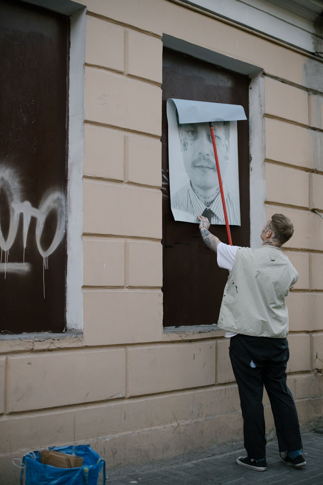

01 / Basis
Strategie en merk
Wie ben je, voor wie, en wat moet de markt onthouden. Eén blad waar al het andere werk uit volgt.

Zichtbaar Media is een full-service marketingbureau, online en offline, met één plan en één aanspreekpunt.


Iemand ziet je  bestelwagen op de ring, zoekt je naam op zijn gsm en komt op een site die er hetzelfde uitziet. Dat is geen toeval. Dat is plannen.
bestelwagen op de ring, zoekt je naam op zijn gsm en komt op een site die er hetzelfde uitziet. Dat is geen toeval. Dat is plannen.
Zeven vakken, online en offline. Je neemt wat je nodig hebt, wat je neemt sluit op elkaar aan.
Wie ben je, voor wie, en wat moet de markt onthouden. Eén blad waar al het andere werk uit volgt.
Een site die snel laadt, op een gsm leest als een boek en aanvragen binnenbrengt. Gevonden worden in Google, organisch en betaald.

Planning, beeld en opvolging van reacties op de kanalen waar je klanten zitten, met beeld dat je zaak echt toont.
Visitekaartjes, brochures, menukaarten en verpakking, met proeven die jij goedkeurt vóór het naar de drukker gaat.
Uithangborden, raamfolie, belettering van bestelwagens en panelen langs de weg. Je zaak, zichtbaar zodra iemand voorbijkomt.
Spots die klinken zoals je zaak, een stand die opvalt en een verhaal dat de streekkrant wil drukken.

Elke maand een korte balans: wat werkte, wat niet, en wat we de volgende maand anders doen.





Beeld in beweging, voor site, sociale media en etalage. Hier nog stockmateriaal, later jouw eigen zaak.
Vier stappen, zonder verrassingen. Je ziet elke proef vóór er iets gedrukt of gepubliceerd wordt.
We luisteren, bekijken wat je nu al doet, online en op papier, en zeggen eerlijk wat we zouden laten liggen.
Doelen, kanalen, budget en kalender naast elkaar. Je ziet hoe bestelwagen, site en advertentie samenhangen.
Eén contactpersoon bij ons praat met de drukker, de plaatser, de adverteerder en de fotograaf.
Elke maand een korte balans van wat het opleverde en wat we daarom anders doen. Geen rapport van dertig pagina's.
Vertel kort wat je zoekt. Je krijgt antwoord van een mens, met een voorstel voor een eerste gesprek.
Plan een kennismaking